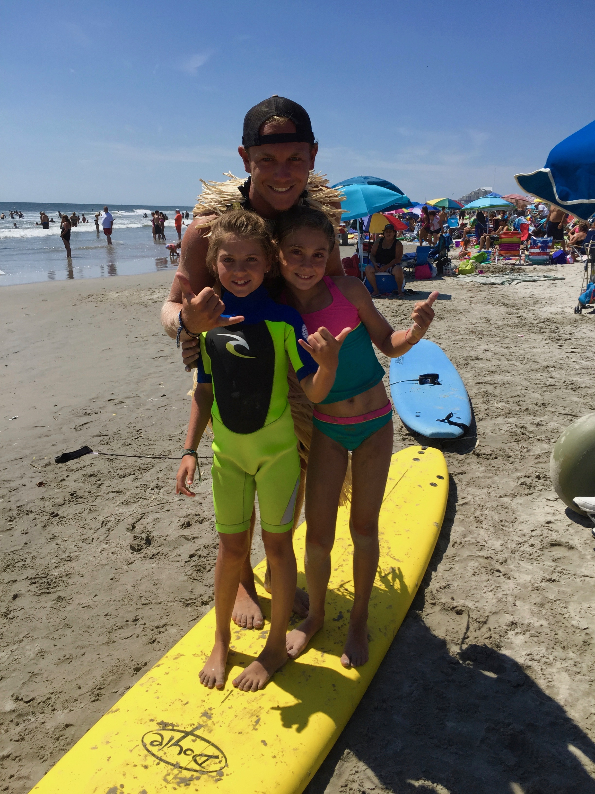
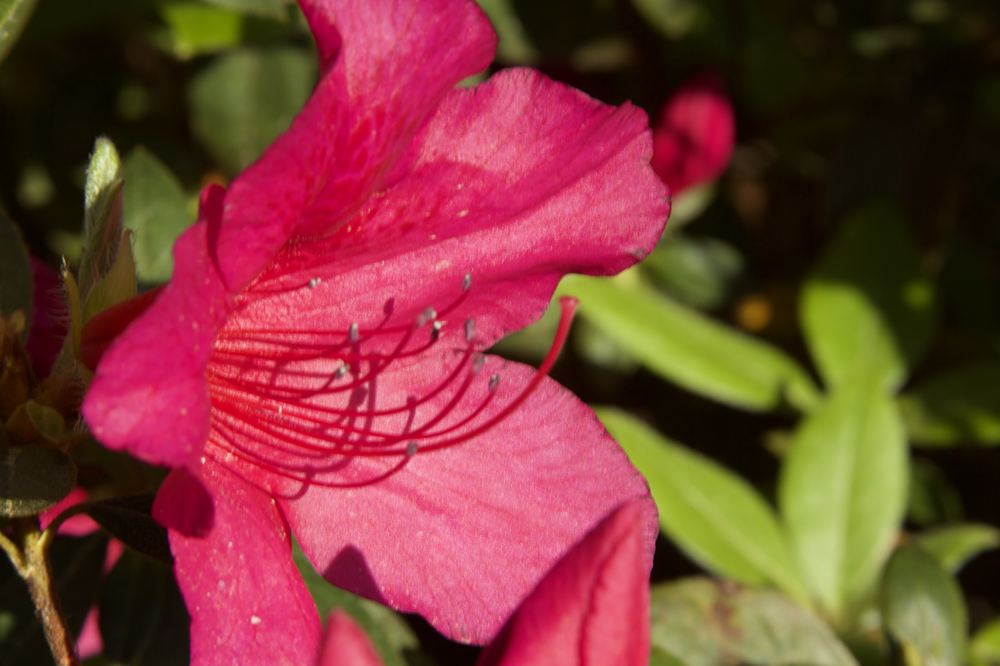
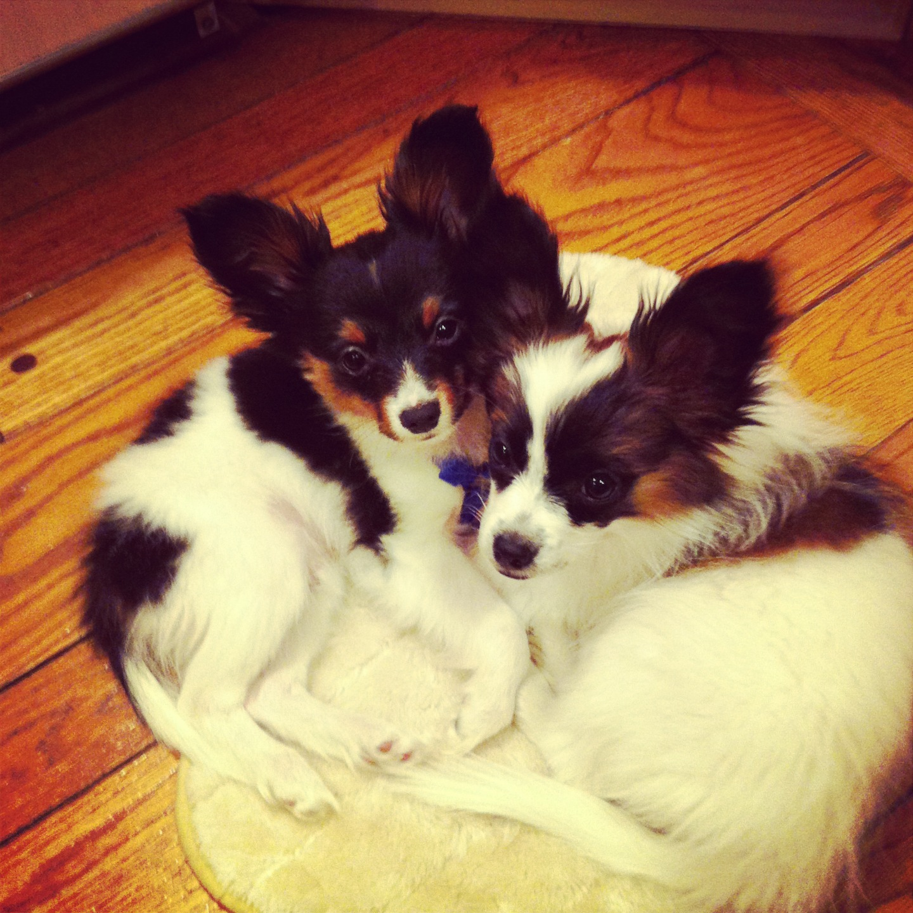

I Am Carrie
Executive Summary
Hello! I am Carrie Lotito. I am a sophomore at ELon University.
I have worked a variety of jobs in my life and have an appreciation
for the film industry and am excited about my current experience I am
accomplishing. I have a variety of interests and a quiet homelife living
in the middle of nowhere.
Professional Life
As far as my professional life goes, I have held a ton of
jobs. My first ever job was a surf instructor when I was 14-15.

I taught 4-7 year olds how to surf. After that, at 16 I had my own
radio show on the victorian era. My next endeavor was being a
hostess at a resturant. following that, I was a direct support professional
Connecting people with disabilities and autism to care takers. Finally,
My most recent job was being a barista at Barnes and Nobles which I
absolutley loved. It was such a good work environment and everyone was
so kind.
Along side my jobs I mentioned, from ages 13-16 I was also an actress.
I worked on several commercials, voiceovers, modeling gigs, theater
shows, and even guest starred on a tv show!

 It was during Covid that I realized
behind the camera was more my place and during college I transitioned into
behind the scenes. I am super excited to be majoring in CTA and
journalism. I have also gathered some recent crew experience like boom op,
camera op, sound mixer, and associate produver. For the next 2 weekends I am
thrilled to be a part of Retrobution where I am the grip and the associate producer.
It was during Covid that I realized
behind the camera was more my place and during college I transitioned into
behind the scenes. I am super excited to be majoring in CTA and
journalism. I have also gathered some recent crew experience like boom op,
camera op, sound mixer, and associate produver. For the next 2 weekends I am
thrilled to be a part of Retrobution where I am the grip and the associate producer.
Currently I am a part of Cinelon club and I hope in the fall to be
a part of ENN. During the summer this summer I hope to get an internship
at Susie Films but I am still not sure if that is promising or not.
Personal Life
During my free time I love to write. I love poetry and journaling.
I also love editing, surfing, music, reading, painting, working out, and photography.
Latley I have really been enjoying editing photos for fun in camea raw and photoshop.
I am very into spirituality and enjoy yoga, meditation, reiki,
crystals, and tarot cards.

I am from Tewksbury New Jersey and live with my Mom, Dad, Sister Dana, and
3 dogs Angel, Rascal, and Rainie.

Contact Information
Phone- 908-500-3254
Email- clotito@elon.edu